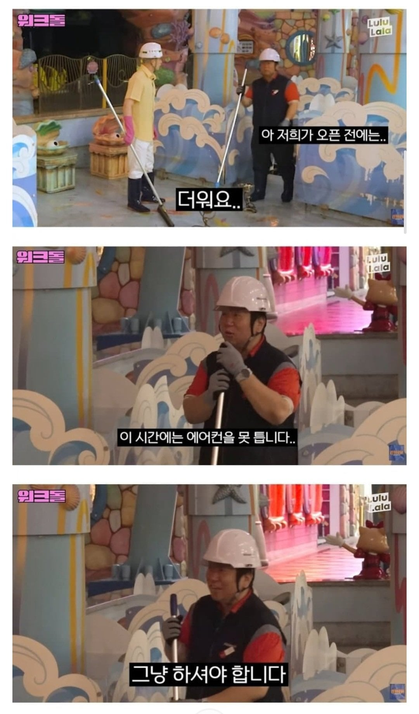
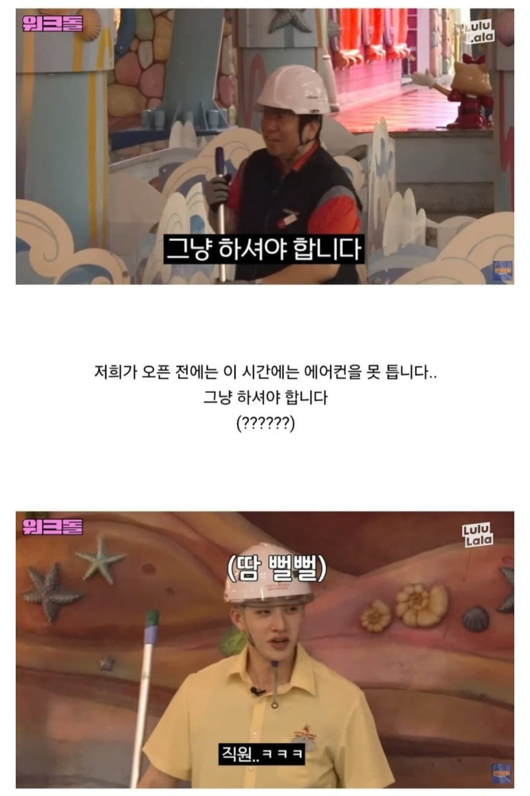
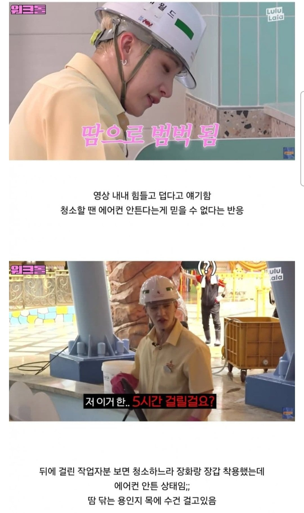

1. 워크맨에 스트레이키즈 나와서 롯데월드 청소함
2. 에어컨 안켜줘서 땀범벅으로 일함
3. 방송 덕분에 롯데월드 미화 근로자분들의 열악한 근무환경 까발려짐



1. 워크맨에 스트레이키즈 나와서 롯데월드 청소함
2. 에어컨 안켜줘서 땀범벅으로 일함
3. 방송 덕분에 롯데월드 미화 근로자분들의 열악한 근무환경 까발려짐
댓글
수집 당시 댓글 23개
아라그니아 · 14 시간 전
그거 효과 있으려면 컨베이어같은데 가만히 서있는, 시원한 바람이 닿는 범위에 있는 그런 사람이여야 함. 큰 공간에선 효과 없음
침착 · 12 시간 전
그럼 청소하는 직원들때문에 롯데월드 전체를 냉방하는게 맞나? 어쩔수없는거지
절대감자초코칙촉 · 12 시간 전
??? 너무 당당해서 옳은 말하는 줄
w5trq937 · 12 시간 전
직원이 더워하는데 냉방을 안하는게 맞나?
스피네키르지마세요 · 11 시간 전
맞지 손놈들 대충 놀면되지 덥다고 롯데월드 전체를 냉방하는 게 맞나? 걍 에어컨 다 떼자
우두루 · 11 시간 전
물류창고에서 더위로 돌아가신 부모님을 생각해보렴
허리디스커 · 7 시간 전
컨셉질 할때는 앞에 물음표붙이라고 안배움?
연어좋아 · 6 시간 전
난 니 말이 맞다고 생각한다 냉방은 말도안되는거고 개인용 냉방장치로 해결해야지뭐
회사에서코고는중 · 5 시간 전
ㅇㅇ 맞음 어쩔수 있는거지 병시나
최후의광휘 · 5 시간 전
에어컨은 개오바고 얼음과 얼음물 보급이 경제적으로 맞다고 봄
Voo평단411 · 9 시간 전
부품들이 징징대노
시키4 · 7 시간 전
Ai 한테 장충체육관 정도의 규모에서 냉방하면 시간당 얼마나 드냐고 물어봤는데, 6만 - 12만 정도 든다고 하네... 조건에 따라 3배까지 더 들 수 있다고 함.
참수맨 · 5 분 전
뭔소리고 훨씬 더들건데
불멸의러너 · 6 시간 전
일부러 그냥하셔야합니다! 강조하시는거같은데 ㅋㅋㅋ
이라기시따 · 3 시간 전
요새 입는 에어컨 뭐 그런 것도 있다던데
봐바라 · 1 시간 전
선풍기조끼? 나름 ㄱㅊ긴한데 시끄러
팝콘각 · 3 시간 전
이래서 온실속 화초같은 어린놈의 시키들아 롯데, 현대, 신세계 기업들이나 대부분은 영업이 끝나면 그냥 냉난방기를 꺼버린다. 물론 수동으로 킬 수 있지만 방재실에서 죽어도 안켜준다. 왜냐? 혹여나 틀어줬다가 잘못되서 고장나면 전부 그걸 킨 사람 책임이거든. 고로 기업은 원래 이익단체이고 영업시간 이외에는 철저하게 더 까다롭게 한다. 인간의 정, 인간미, 존엄성 이런게 아예 없어.
Aideln · 3 시간 전
온실속 화초들이 문제가 아니라 너도 마지막에 언급하듯 기업들이 문제 아니냐? 뭔 생각으로 잘못인지 알면서도 나무라는 사람들을 탓하는거냐? 스스로 이상하다 생각 안드냐?
팝콘각 · 3 시간 전
니 얼굴이 더 이상해...ㅋ
뷰리풀플 · 3 시간 전
니똥이다 똥싸는 소리나 들어라 뿌직뿌직 뿌뿌직...뿌푸득!!!! 트름소리는 덤이다 꺼어어어어어어ㅓ그으ㅡ응ㄱ 끄러르르어어어ㅓ억 거어어어억~~~
닌닌이다 · 1 시간 전
어? 좀 짜치는데?
도널드트럼프주니어 · 24 분 전
기업이 이익단체인거랑, 노동자의 권리랑 뭐가 더 우선되어야 한다고 생각함? 법에서 정한 근로자 권리보다 법인 이익추구가 우선된다고 말하고 싶은거임? 너가 말하는 명제는 바보가 아니면 다 알 수 있는 사실임. 저렇게 하는게 맞다는거임 그럼? 취지를 모르겠네
아재아제바라아재 · 25 분 전
이글이랑 별개로 롯데 잠실타워의 냉방 시스템 자체가 일반적인 냉방 시스템과는 다르단 영상을 봤었는데 롯데월드도 같은 구조면 힘들수도?